Chi siamo
Birolini nasce dall'iniziativa di Vittorio Birolini. Dal 1979 sviluppa aree e costruisce edifici residenziali, commerciali e industriali.
Dal 2010 realizza anche impianti fotovoltaici, a tetto e a terra, in Italia e all'estero.
La nostra storiaZona industriale di Pedrengo (BG), progetto del 1980. Foto.
Dal 1979
Birolini è stata fondata oltre 45 anni fa da Vittorio Birolini. Dal 1979 ci occupiamo di sviluppo immobiliare, partendo dall'acquisizione di aree con potenzialità edificatoria fino ad arrivare alla costruzione di edifici residenziali, industriali e commerciali.
Dal 2010 ci dedichiamo anche alla realizzazione di impianti fotovoltaici a tetto e a terra, in Italia e all'estero.
Come lavoriamo
Utilizziamo principalmente risorse interne per lo sviluppo immobiliare, sostenute da competenze professionali esterne quando necessario, e lavoriamo da molti anni con realtà professionali e industriali del territorio.
Birolini S.p.A. è una holding finanziaria e operativa, che si occupa di progettazione, consulenza e gestione sia di immobili sia di impianti fotovoltaici.
Dall'area all'edificio
Un esempio vero, tappa per tappa: il polo logistico di Rivolta d'Adda.
-
L'area
Cerchiamo e valutiamo l'area.
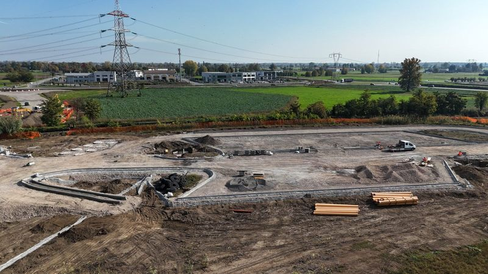
Area di 110.000 mq. Foto dal drone del 05/11/2026, a lavori iniziati. -
I permessi
Parliamo con il Comune e otteniamo i permessi.
Il progetto: slp 60.000 mq. Render. -
Il cantiere
Costruiamo con le nostre risorse e con aziende del territorio.
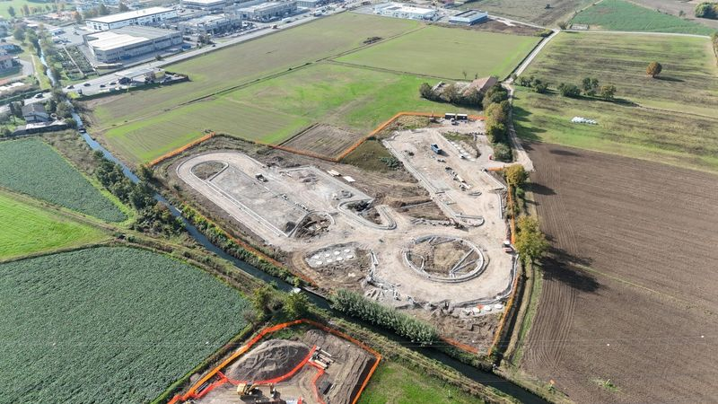
Foto dal drone del 05/11/2026: lavori di urbanizzazione. -
L'edificio
Il polo logistico finito.
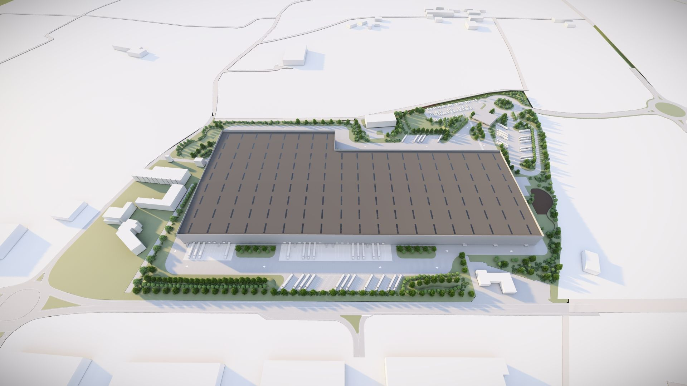
Come sarà. Render.
Dal 1979 a oggi
-
1979
Birolini nasce dall'iniziativa di Vittorio Birolini.
-
1980
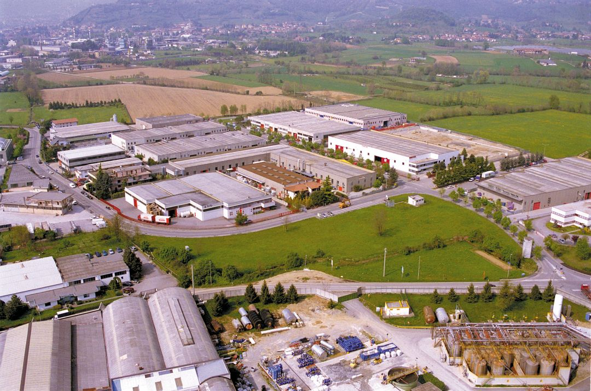
Zona industriale di Pedrengo Pedrengo (BG), industria -
1995
 Capannoni in via Garibaldi
Pedrengo (BG), industria
Capannoni in via Garibaldi
Pedrengo (BG), industria
-
2000
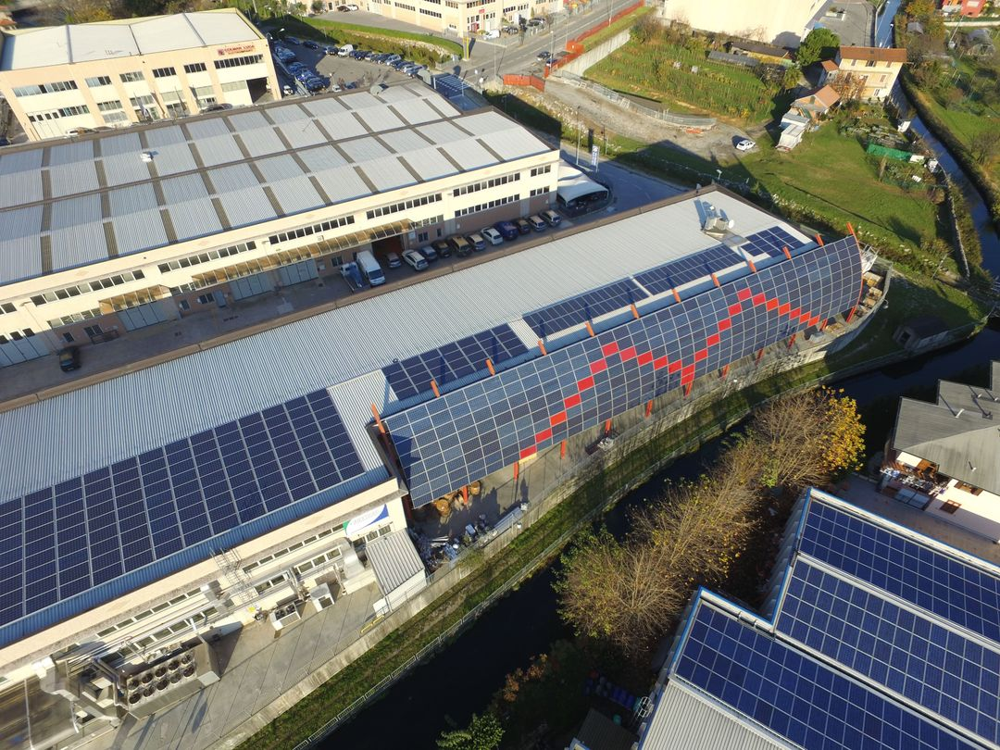
Parco industriale Nembro 1 Nembro (BG), industria -
2002
 Capannone industriale a Ciserano
Ciserano (BG), industria
Capannone industriale a Ciserano
Ciserano (BG), industria
-
2003
 Capannone in via Marconi
Ranica (BG), industria
Capannone in via Marconi
Ranica (BG), industria
-
2006
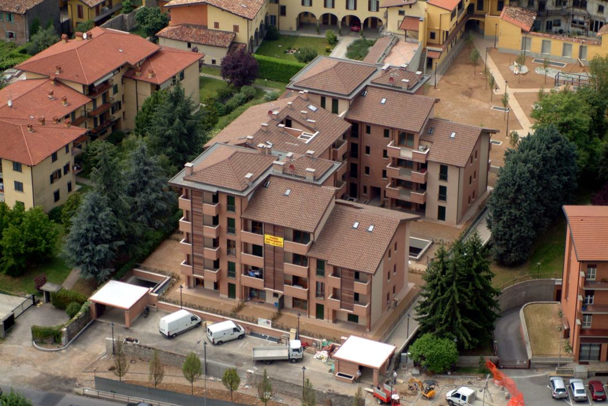
Residenza Il Parco Nembro (BG), case -
2009
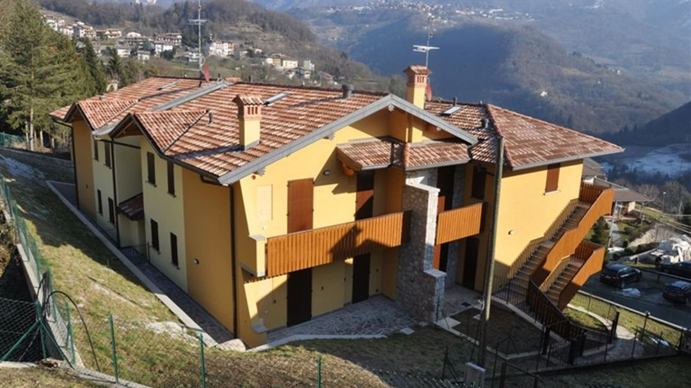
Residenze a Bracca Bracca (BG), case -
2010
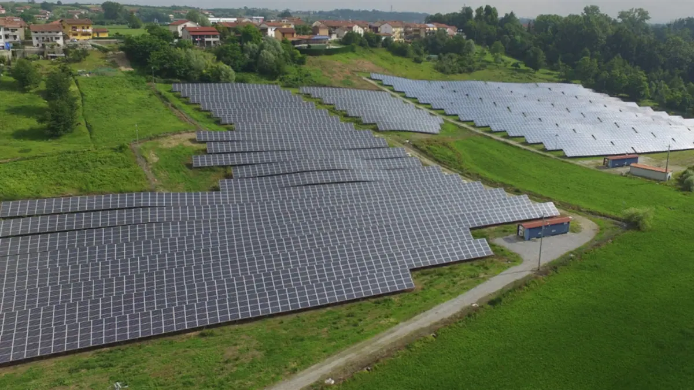
Campo fotovoltaico a Magliano Alpi Magliano Alpi (CN), energia -
2012
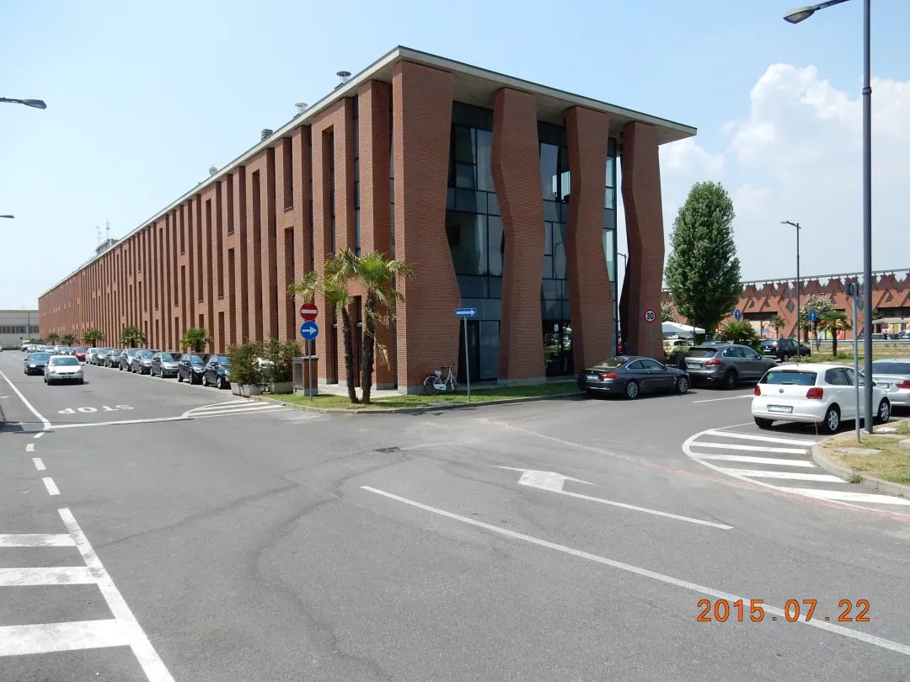
Centro direzionale Caleido Bernareggio (MB), commercio -
2015
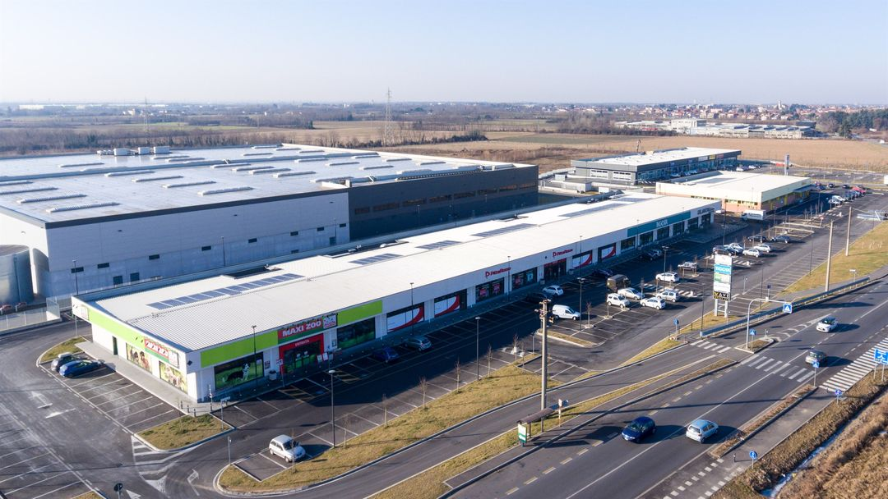
Parco commerciale Trezzo 1-2 Trezzo sull'Adda (MI), commercio -
2018
 Parco commerciale Biraldi
Curno (BG), commercio
Parco commerciale Biraldi
Curno (BG), commercio
-
2019
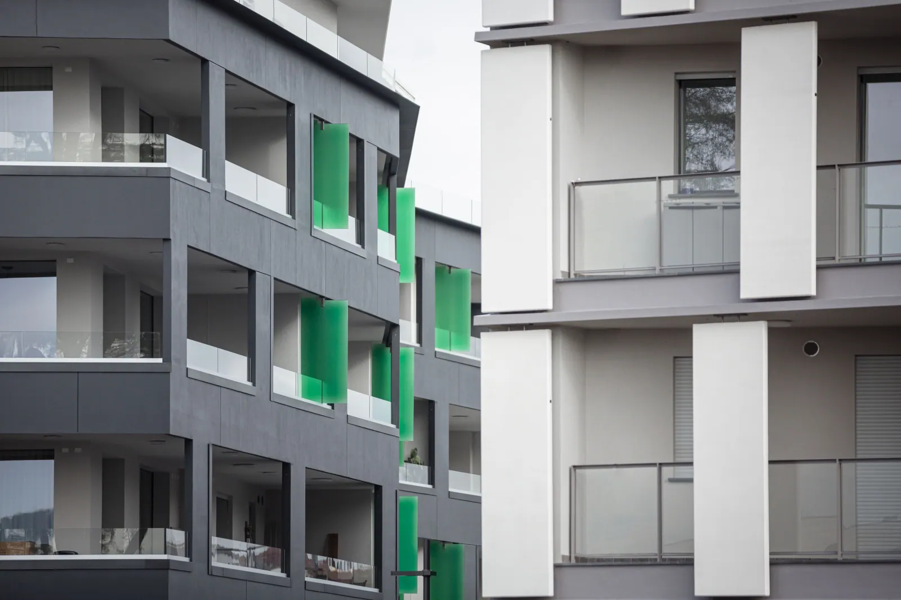
Redona Centro, lotti A1-A2-A3 Bergamo (BG), case -
2020
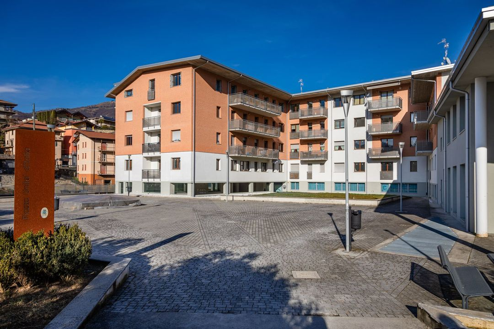
Residenza Antiche Ciodere Leffe (BG), case -
2024
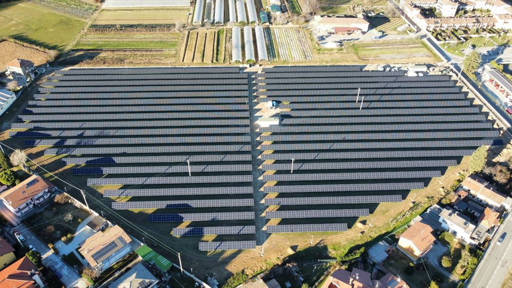
Campo fotovoltaico di Torre Boldone Torre Boldone (BG), energia -
2025
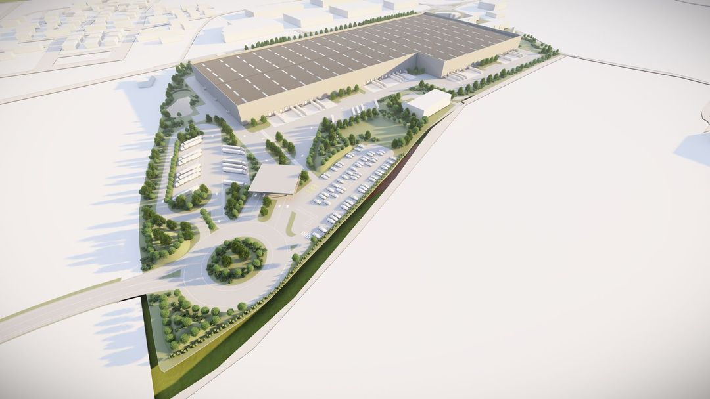
Render Polo logistico a Rivolta d'Adda Rivolta d'Adda (CR), industria -
2026
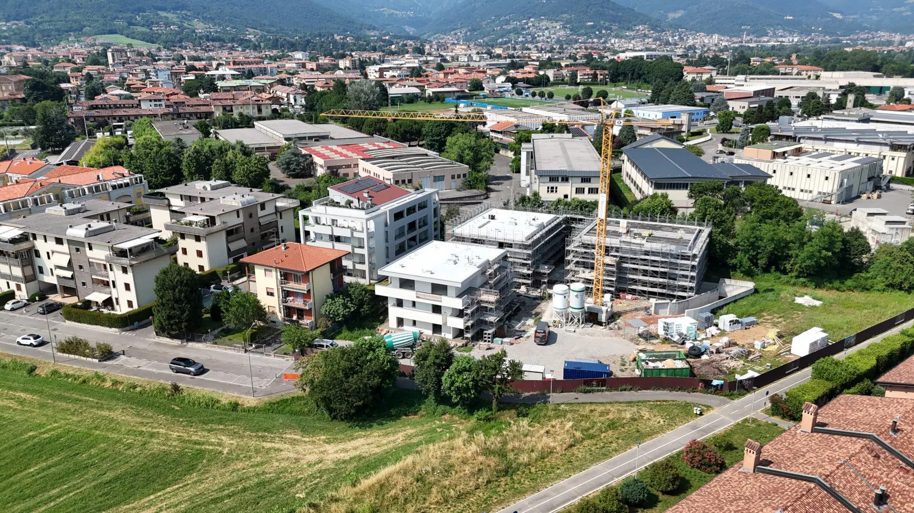
Residenza Viaduse Gorle (BG), case - Tutti i 42 progetti
Le società di progetto
Birolini S.p.A. opera attraverso queste società di progetto.
Residenziale
- Cortile Breda S.r.l.
- Dalmen S.r.l.
- Redona S.r.l.
- Viaduse S.r.l.
Commerciale
- Farno S.r.l.
- Redorta S.r.l.
- Regia Immobiliare S.r.l.
- Teide S.r.l.
- Vereno S.r.l.
Fotovoltaico
- Covotec S.r.l.
- Imotorre S.r.l.
- Portec S.r.l.
- Riante S.r.l.
- Rinord S.r.l.
Industriale e logistica
- Curen S.r.l. (industriale)
- Ridadda S.r.l. (logistica e commerciale)
- Ridest S.r.l. (logistica e industriale)
- Vialog S.r.l. (logistica, commerciale e residenziale)
Agricolo
- Ghibi S.r.l.
Raccontaci di cosa hai bisogno: ti risponde la persona giusta.
Il modulo per scriverci da questa pagina è in arrivo. Per ora «Scrivici» apre la tua email.
Birolini S.p.A., Via G. Marconi 123/C, 24020 Ranica (BG)